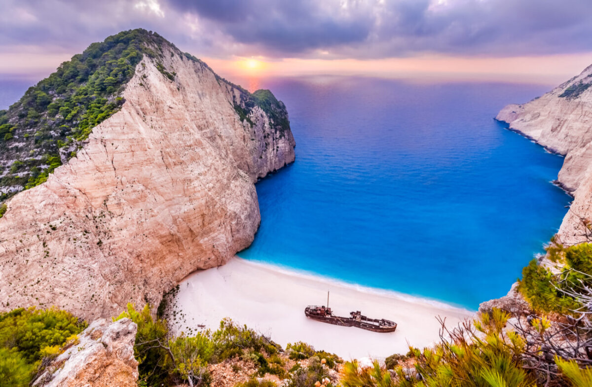
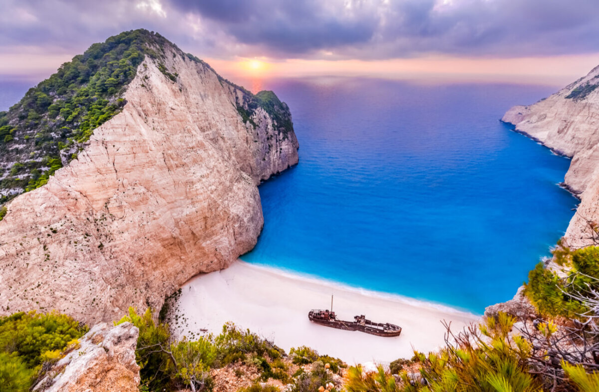

El sonido de las olas, la brisa suave del mar y la arena entre los dedos de los pies son solo algunas de las cosas que hacen que visitar la playa sea una de las experiencias más relajantes y rejuvenecedoras. Desde playas de aguas cristalinas hasta costas rodeadas de exuberante vegetación, el mundo está lleno de lugares impresionantes para disfrutar del sol y el mar. Aquí te presentamos una selección de las mejores playas del mundo que deberías visitar al menos una vez en la vida.
1. Playa de Bora Bora, Polinesia Francesa
Bora Bora es famosa por su impresionante belleza natural y sus aguas turquesas. Esta playa, rodeada de un arrecife de coral, es ideal para practicar snorkel y buceo. Las vistas del monte Otemanu, junto con los bungalows sobre el agua, hacen de Bora Bora un destino romántico y de ensueño.
2. Playa de Whitehaven, Australia
Ubicada en las Islas Whitsunday, Whitehaven Beach es conocida por su arena blanca y fina, compuesta casi en su totalidad de sílice. Con más de 7 kilómetros de longitud, es perfecta para pasear, relajarse o disfrutar de un picnic. Sus aguas cristalinas son ideales para nadar y hacer snorkel.
3. Playa de Navagio, Grecia
También conocida como "Shipwreck Beach", Navagio es famosa por su impresionante acantilado y el naufragio de un barco que se encuentra en su costa. Accesible solo por barco, esta playa de arena blanca y aguas azules profundas es un lugar impresionante para disfrutar de un día de sol y tomar fotografías memorables.
4. Playa de Anse Source d'Argent, Seychelles
Anse Source d'Argent es famosa por sus imponentes rocas de granito y sus aguas tranquilas y poco profundas. Esta playa es perfecta para nadar, hacer snorkel y relajarse bajo el sol. Su belleza natural ha sido capturada en numerosas películas y revistas, convirtiéndola en uno de los destinos más fotografiados del mundo.
5. Playa de Tulum, México
Tulum es conocida por su combinación de historia y belleza natural. Con sus impresionantes ruinas mayas que se asoman sobre el mar Caribe, esta playa de arena blanca y aguas turquesas es perfecta para aquellos que buscan un poco de cultura junto con el sol. Además, la zona cuenta con una vibrante escena de restaurantes y boutiques.
6. Playa de Copacabana, Brasil
Ubicada en Río de Janeiro, Copacabana es una de las playas más icónicas del mundo. Con su animado ambiente, una amplia oferta de bares y restaurantes, y vistas impresionantes del Pan de Azúcar, es el lugar perfecto para disfrutar del sol y la cultura brasileña. No te olvides de probar una caipirinha mientras te relajas en la playa.
7. Playa de Maldives
Las Maldivas son sinónimo de playas de ensueño y lujo. Con aguas cristalinas y bungalows sobre el agua, este archipiélago ofrece un paraíso para los amantes de la playa. Puedes disfrutar de actividades acuáticas, como buceo y snorkel, o simplemente relajarte en la arena blanca mientras disfrutas de la vista.
Imágenes Destacadas
 

Conclusión
El mundo está lleno de playas increíbles que ofrecen algo para todos. Ya sea que busques relax, aventura o un poco de ambos, estas playas son destinos perfectos para tus próximas vacaciones. Empaca tu toalla y protector solar, y prepárate para disfrutar de algunas de las mejores playas del mundo.
¡Contacta a TurisTicos!
Si estás listo para planificar tu escapada a la playa, ¡contáctanos! En TurisTicos, te ayudaremos a encontrar el destino perfecto para disfrutar del sol, el mar y la arena.